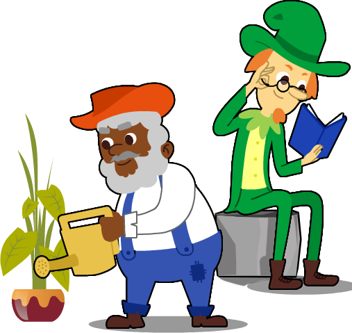
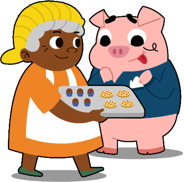
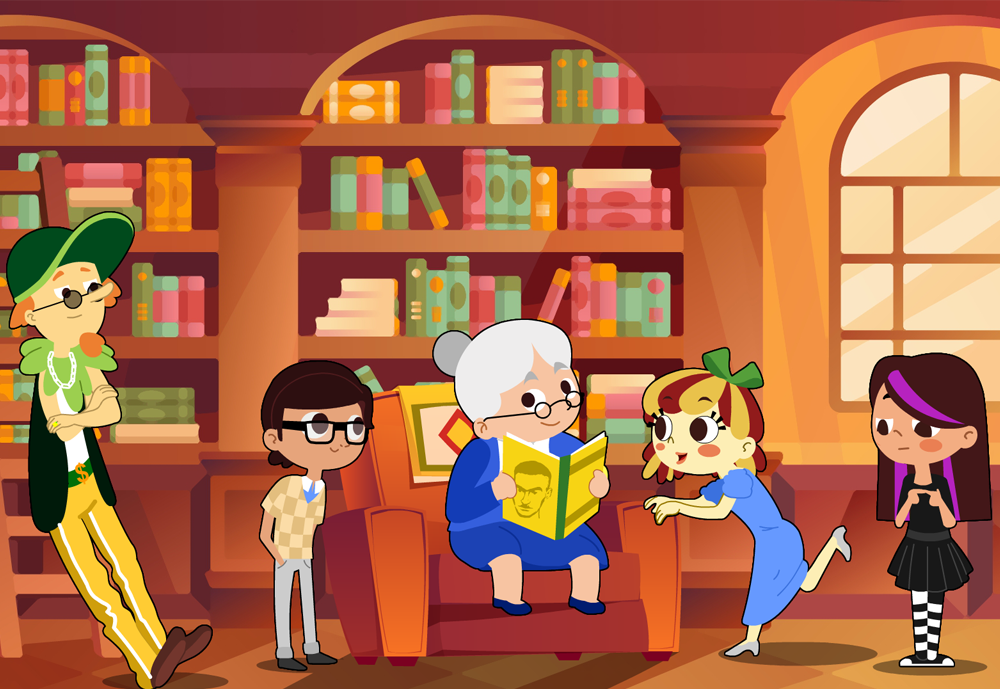

OPS!
Visualize este recurso em um computador, em janela com largura mínima de 992px.
que torna uma personagem fraca ou forte? O que torna uma personagem memorável? Não há dúvida de que as personagens infantis de Monteiro Lobato estão gravadas na memória de pessoas de diversas gerações. Em geral, elas têm características marcantes, que ecoam qualidades centrais para a construção de nossa sociedade, como coragem, curiosidade, zelo, bondade, entre outras.  O psiquiatra Carl Jung chama essas características definidoras da vida humana de “arquétipos”. Seria possível dizer que uma força da literatura de Lobato são as personagens arquetípicas, isto é, personagens que carregam características humanas marcantes?
ocê está na sala do Sítio e aqui estão as principais personagens do mundo lobatiano. Você seria capaz de ligar essas personagens às suas características marcantes?
maldosa
misteriosa
forte
inteligente
erudito
trapaceiro
malandro
acolhedora
trabalhadora
medroso
guloso
esperta
atenciosa
carinhosa
sábia
perspicaz
líder
levada
teimosa
ambiciosa
corajoso
curioso
2
Atenção!
Caso você arraste a característica para a personagem errada, a característica voltará para o quadro
cinza. Você pode então tentar a mesma característica para outra personagem.
Parabéns!
Você conseguiu concluir as caracteristicas de cada personagem
gora vamos lidar diretamente com trechos da obra de Monteiro Lobato. Depois que você identificou
corretamente as características mais destacadas das principais personagens, será que você poderia indicar
quem protagoniza as 10 (dez) seguintes passagens da obra? Lembrando, claro, que as características
identificadas são boas pistas para saber quem é quem.
• Preencha corretamente o nome dos personagens nas lacunas em branco:
você teve sorte!
Escapou da Cuca... Siga para próxima tarefa.

3
gora vamos lidar diretamente com trechos da obra de Monteiro Lobato. Depois que você identificou
corretamente as características mais destacadas das principais personagens, será que você poderia indicar
quem protagoniza as 10 (dez) seguintes passagens da obra? Lembrando, claro, que as características
identificadas são boas pistas para saber quem é quem.
Sentou-se ao lado do príncipe e gabou muito a arrumação da mesa.”
(Reinações de Narizinho)
(Reinações de Narizinho)
– Esse papel não serve, senhor Visconde. Quero papel cor do céu com todas as suas estrelinhas. Também a tinta não serve. Quero tinta cor do mar com todos os seus peixinhos. E quero pena de pato, com todos os seus patinhos.”
(Memórias de Emília)
– “Não é da sua conta” – respondeu a diabinha.
Tia Nastácia também suspirou. Mas fez a pasta de couve pedida, com a qual a boneca encheu uma latinha. Embrulhou-a num jornal e, muito segura de si, foi ter com Popeye.”
(Memórias de Emília)
(Caçadas de Pedrinho)
— Lá vêm vindo eles, sinhá! e vêm puxando uma coisa esquisita... Quer ver que caçaram alguma paca?”
(Caçadas de Pedrinho)
— Cuidado! — exclamou ela. — Se um de vocês perde o equilíbrio e vem ao chão, esborracha o nariz para o resto da vida. Mas que ideia foi essa, meninos?”
(Caçadas de Pedrinho)
— Mas se a Cuca é poderosa como você diz, que poderemos fazer?
— Não sei. Lá veremos. O que é preciso é não desanimar. Se ela é poderosa, eu sou astucioso. A astúcia inúmeras vezes vence a força. Faça das tripas coração e acompanhe-me. O mau foi termos deixado escapar o porco que nos trouxe, Precisamos descobrir nova montaria.”
(O Saci)
— O coitado do Brasil cansado de esperar petróleo e este cacetíssimo Visconde a nos injetar noites e noites de ciência! Não quero mais. Chegou o momento de começarmos o poço.
— Mas, como, Pedrinho , se ainda quase nada sabemos de geologia? — objetou a menina.
— Muito bem. Vamos começar o trabalho e o Visconde nos vai ensinando. Lições ao ar livre — fazendo. É fazendo que o homem aprende, não é lendo, nem ouvindo discursos. Eu quero ciência aplicada .
— Ali na batata! — gritou Emília que vinha entrando. — Também penso como Pedrinho . Quero começar o poço já.”
(O poço do Visconde)
obato criou personagens que dialogam com o contexto em que viveu. Assim, o menino é corajoso, enquanto a menina é mais delicada, a senhora branca é a dona da casa, a senhora negra é quem trabalha na casa. Nós sabemos que a literatura infantojuvenil reage a seu tempo e, por isso, a ideia agora é que possamos subverter a literatura de Lobato à luz do nosso tempo e de nossos lugares.
Você deve pensar em uma personagem diferente da esperada para protagonizar sua narrativa. Você pode retomar os trechos da etapa anterior para fazer a sua história, modificando as características esperadas para os personagens. Ou pode começar a sua história de um novo Sítio do Pica-Pau Amarelo. Vamos lá?
4
cho que vimos a força das personagens infantis de Lobato, não foi? E descobrimos que essa força vem, muitas vezes, da forma como elas reverberam características centrais da experiência social e humana, os arquétipos. Esperamos também que tenha sido muito divertido!
Você tem a opção de salvar o arquivo em PDF ou imprimir. Lembre-se que nem tudo precisa ser impresso e você ainda contribui com a natureza.
6